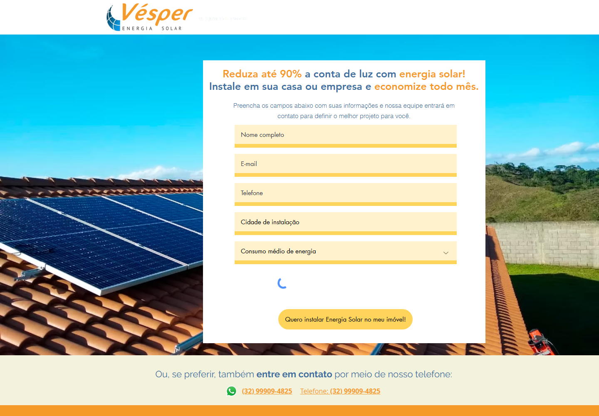

Contatos anônimos. Telefones, e-mails, documentos e transcrições completas não são publicados. Indicadores e análises preservados; evidências identificadas disponíveis somente na versão interna.
Visão geral
Entenda como os contatos avançam e o que influencia a decisão.
Todos os meses · todas as origens
Os filtros atualizam toda a análiseOnde estão os contatos com conversa?
Perdido: o contato decidiu ou não é compatível (concorrente, região, off-grid, consumo, preço)um contato Silêncio: o comercial encerrou no HubSpot depois de tentar contato sem resposta, e a conversa quase nunca registra isso como perda. Fechado e Perdido seguem o HubSpot de 19/11; contatos ativos seguem a conversa.
Distribuição por mês
Mês da lista ou da primeira mensagem para novas conversas do Tintim. Não é o mês do desfecho.
Distribuição por origem
Origens das listas preservadas. Adições do Tintim: Meta Ads, Google e Outras origens = Site.
Objeções mais frequentes
Principais motivos de perda
Desfechos por mês
Clique em um grupo ou número para explorar os contatos correspondentes.
O que entrou em “Outro”?
São barreiras explícitas nos textos acessíveis. Cada tema conta uma vez por contato; um contato pode ter vários temas. Ausência de resposta não revela uma objeção.
Objeções no recorte
Entram como perda os negócios Perdidos no HubSpot e as perdas documentadas na conversa, com o silêncio separado de decisão e incompatibilidade. Projetos adiados, baixa viabilidade e demandas de pós-venda aparecem separadamente em “Outro”um contato Os motivos só aparecem quando foram registrados no CRM ou escritos na conversa; ligações e áudios não entram, e a equipe da Vésper acredita que obra e mudança de padrão elétrico têm mais casos do que os mostrados aqui.
Motivos de perda
um contato pertence à lista de novembro, com perda documentada em agosto e tentativa posterior de reativação.
Detalhamento de “Outro”
Sem perfil é uma incompatibilidade documentada com a demanda atual de nova instalaçãoum contato Pode coexistir com qualquer desfecho. Preço, silêncio, crédito negado ou idade isolada não bastam. Os demais contatos não estão automaticamente qualificados. Falta de contato não é sem perfil: o negócio encerrado por silêncio aparece em “Perdido por silêncio”um contato O HubSpot não tem um motivo “sem perfil” (ação A15); a definição e o registro precisam ser alinhados com a equipe da Vésper.
Sem perfil no recorte
Um motivo principal por conversa. Quantidades são casos confirmados no texto acessível; áudios indisponíveis podem limitar a identificação.
Por mês
Por origem
Onde se concentram?
Clique em uma quantidade para abrir os contatos sem perfil daquele mês e origem. Use os filtros para analisar os motivos desse grupo.
Idoso: 0 casos comprovados por idade. Criança: 0 casos com menoridade comprovada. Pedir Robux ou iPhone não comprova idade. um contato teve hipótese de idade na análise de crédito, sem confirmação do banco. Suporte e fornecedores são classificados pela natureza da demanda, sem desqualificar clientes existentes.
Contatos do recorte
O que virou conversa e oportunidade?
Leitura acrescentada a partir dos feedbacks de Mirele e Heloísa. Evidências, relatos e hipóteses ficam identificados. Corte das conversas: 17/11/2026 (novembro parcial); HubSpot exportado em 19/11/2026.
O indicador abaixo reconhece conteúdo textual após uma abordagem. Formulário, saudação, resposta automática e silêncio não comprovam qualificação. Áudios e ligações podem conter avanços que não conseguimos interpretar.
Aproveitamento no recorte
Interação: desde o início do mês atribuído até o corte disponível. Proposta/dimensionamento e visita: mínimos revistos no histórico completo da oportunidade, sem inferir ausência nos demais casos. Os um contato podem se sobrepor e não substituem os desfechos.
Ausência de falta de perfil não comprova demanda compatível. A passagem de cadastro bruto para contato, perfil, oportunidade e venda precisa de critérios e registros conciliados no CRM. Não calculamos custo por qualificado nesta base.
As taxas usam conversas atribuídas do recorte, não o cadastro bruto de mídia/HubSpot. Novembro tem menos tempo de acompanhamento. Sem uma janela de maturação comparável, diferenças não provam melhora ou piora do canal.
O que aparece depois da abordagem
A última mensagem não determina quem causou a parada. “Próximo passo a confirmar” não atribui falha ao comercial. Vínculos prováveis continuam sinalizados na ficha.
Como interpretar os indicadores
Onde conferir cada informação
O que sabemos sobre o retorno à mídia
Contagens de conversão são ações, não pessoas únicas. Evento recebido não demonstra, sozinho, que ele está selecionado para orientar lances. Plano técnico e prova de funcionamento (.md) ↗
Casos para conferir com CRM e Tintim
Fatos da conversa e etapa exportada do Tintim. A etapa atual do HubSpot está em "Conciliação do HubSpot" acima e em conferencia-dados/conciliacao-leads.csv. Logs e a causa de cada divergência continuam pendentes.
Quais incompatibilidades foram documentadas?
Perdido não significa sem perfil. Crédito recusado, silêncio ou idade isolada não bastam. Não foram confirmadas categorias “idoso” ou “criança”; não inferimos idade por referências a jogos ou iPhone.
Carro elétrico pede qualificação de intenção
Registrar: informação sobre veículo, instalação de carregador, instalação solar, demanda combinada ou intenção indefinida. Confirmar o prazo e o consumo futuro na conversa.
O resumo de nove conversas pertence ao estudo completo do anúncio e não muda com os filtros. Não representa todas as campanhas de veículo ou carregador.
Financiamento e contatos estranhos à oferta
Há uma demanda explícita de empréstimo e dois casos classificados como busca de prêmio/jogo, sem demanda solar. Esses casos não comprovam promessa feita no anúncio nem origem PMax.
Confrontar mensagem, criativo/destino e vínculo de origem. Os exemplos de apostas relatados pela cliente ainda precisam ser identificados e investigados.
Como conheceu a Vésper e como chegou agora?
Exemplos explícitos destacados na revisão, não um censo completo de indicações. Os demais registros precisam de preenchimento sistemático. Indicação seguida de clique pago pode ser uma jornada combinada; isso não autoriza dupla contagem de venda ou causalidade automática para o último clique.
“Como você conheceu a Vésper?” e “O que motivou procurar a gente agora?”um contato Registrar a fala sem sugerir Google/Instagram primeiro. Guardar o rastreio separadamente, preservando seu histórico.
O retorno que precisamos dar à cliente
“Em teste” registra iniciativas que Mirele informou já estarem em andamento. Não significa eficácia comprovada. Alterações de campanha, site, CRM e integrações não foram executadas por esta atualização do relatório.
Como avaliar as iniciativas
Peças atuais e o que ajustar
Configuração consultada em 17/11. No Google, as duas campanhas analisadas estão pausadas; anúncios habilitados podem estar dentro de uma campanha sem entrega. Na PMax, mostramos grupos e recursos que podem formar combinações.
As miniaturas Meta são referências visuais, não a reprodução de todos os frames/itens. Quatro IDs retornaram texto completo. O conector não expôs textos de CALL_AD; o inventário mantém os IDs sem inventar a copy. Recursos PMax de texto vêm da consulta anterior do mesmo dia; estados de campanhas e grupos foram atualizados.
O que fazer nos anúncios
Como a entrega está orientada hoje
Configuração atual separada das ações propostas. Cada configuração tem uma situação: incluído, excluído, negativado ou sinal. Estes dados não são filtrados pelo mês da coorte de leads. Público-sinal da PMax não limita toda a entrega àquela idade, interesse ou lista.
Incluído, excluído, negativado e sinal
Clique em um quadro para filtrar a tabela. A cor acompanha sempre o nome da situação.
O que revisar e testar
Termos de instalação para avaliação
Propostas para revisão. As negativas de campanha estão no inventário; listas compartilhadas e negativas da conta precisam ser conferidas no diagnóstico Google e no Gestor antes da aplicação. Não foi chamado de desperdício o custo de toda pesquisa fora do relatório visível.
Uma página que qualifique e ajude a decidir
vespersolar.com/faleconosco ↗ · formulário e página renderizados no navegador, sem enviar cadastro ou alterar o site.
Preservar e organizar
A página contextualiza instalação em um contato/empresa, tem cidade e consumo no formulário, contato por WhatsApp, projetos, depoimentos, financiamento e etapas de execução.
Cidade e consumo estão com required=false no DOM renderizado. Nome, e-mail e telefone estão obrigatórios. A validação do servidor não foi testada.
Testar uma explicação mais direta do investimento e do próximo passo, com prova local perto do formulário e FAQ sobre financiamento, custos extras e conta residual.
A versão móvel própria do Wix foi inspecionada, sem transbordamento horizontal. Não há medição de conversão ou de velocidade que permita atribuir perdas à página.

Captura de 17/11. O desafio de verificação apareceu carregando na automação; conferir o comportamento em aparelhos reais antes de concluir que há falha.
Prioridades da landing page
Como poderia ficar a abertura
Ações comerciais ligadas às conversas
Os indicadores e o ranking abaixo respondem aos filtros de mês e origem. As recomendações consideram a base completa; os casos que aparecem em cada ação pertencem ao recorte selecionado.
Por onde começar
Um contato por família de objeção. Clique para abrir os contatos e conferir as evidências. Não é uma atribuição causal de perda.
Cada etapa pede um combinado
Preço e financiamento pedem uma resposta comercial. Obra ou compra futura pedem uma retomada combinada. Sem resposta continua em aberto enquanto não houver desfecho explícito.
Conexão e implementação da integração com o Tintim estão em documento separado (.md)um contato
O ICP e a oferta batem com a compra?
O que manter, revisar e verificar
Clique no ponto para ver os campos originais, a interpretação e as mensagens que a sustentam. Exemplos não demonstram tamanho de mercado, superioridade de um ICP ou causalidade de venda.
Critérios de compra antes de uma persona única
Preservar economia, viabilidade e confiança técnica. Distinguir residência/família e empresa/propriedade; consumo futuro atravessa esses contextos. Híbrido/backup precisa de validação comercial e técnica própria.
Idade, profissão, renda e margem não estão sistematizadas para toda a base. Não recomendamos excluir pessoas por não se parecerem com o personagem cadastrado, nem abandonar B2B a partir desta amostra.
Apresentar a oferta com mais precisão
O que precisamos saber para chamar de oportunidade
Silêncio, perda e crédito recusado não são sinônimos de falta de perfil. Não há corte de R$400 no ICP consultado; o consumo atual deve ser avaliado junto com a expansão prevista e a viabilidade.
Como validar antes de alterar a estratégia
Limites da conclusão e fontes
Quem faz o quê, por pilar
Todas as ações do relatório (ICP, anúncios, segmentação, landing page, comercial e dados), separadas entre o que cabe à Vésper e o que cabe à Unidcom. Ações compartilhadas aparecem nas duas colunas. A divisão é uma proposta, a combinar com a cliente.